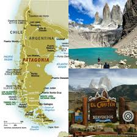
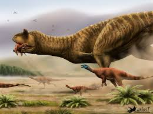
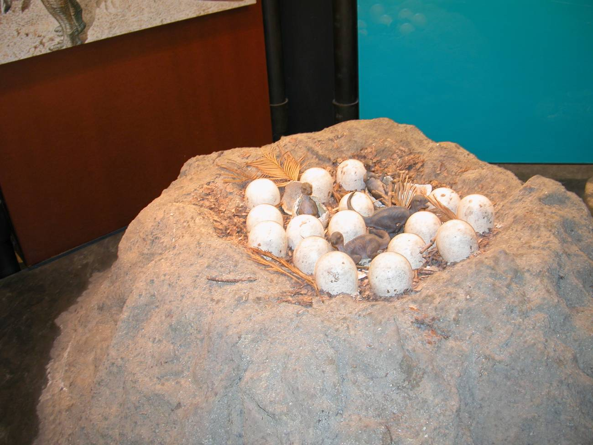

Hábitat y Ubicación Geográfica

El Carnotaurus habitó lo que hoy conocemos como la Patagonia argentina, específicamente en la provincia de Chubut. Su único espécimen conocido fue hallado en la Formación La Colonia, una unidad geológica del período Cretácico Superior (hace aproximadamente 72–69 millones de años).
Durante aquella época, el territorio patagónico presentaba un clima templado a subtropical, con llanuras amplias, ríos y zonas boscosas. El supercontinente Gondwana ya se encontraba en proceso de fragmentación, lo que explica la fauna única que evolucionó en América del Sur de manera relativamente aislada.
Pertenecía al grupo de los abelisáuridos, familia de terópodos que dominó el hemisferio sur durante el Cretácico mientras los tiranosáuridos dominaban el norte.
Hábitos Alimenticios

El Carnotaurus era un carnívoro activo que cazaba presas de mediano y gran tamaño. A diferencia de otros grandes terópodos, su mandíbula era notablemente corta y profunda, lo que inicialmente generó debate: ¿cómo podía matar presas grandes con tan poco alcance de mordida?
Las investigaciones más recientes sugieren que podía propinar mordidas rápidas y repetitivas con gran velocidad de apertura y cierre mandibular, usando la inercia de su cuello para golpear. Sus posibles presas incluían saurópodos jóvenes o de tamaño mediano como Titanosaurus, y dinosaurios ornitópodos.
Características Dentales y de Mordida
- Dientes comprimidos lateralmente, aptos para cortar carne.
- Mandíbula corta pero con gran profundidad ósea para absorber impactos.
- Velocidad de cierre mandibular superior a la de muchos terópodos contemporáneos.
- Sin evidencia de que usara sus cuernos para cazar; probablemente servían para combates intraespecíficos.
Hábitos Reproductivos

Al igual que el resto de los dinosaurios, el Carnotaurus era ovíparo, es decir, se reproducía mediante huevos. No se han encontrado huevos fósiles atribuidos directamente a esta especie, pero por analogía con otros abelisáuridos y terópodos cercanos, se infiere que:
- Ponía nidadas de varios huevos en depresiones cavadas en el suelo o en zonas de vegetación.
- Los huevos eran probablemente elipsoidales, con cáscara dura.
- Se desconoce si ejercía cuidado parental activo, aunque es posible algún grado de vigilancia del nido.
- Las crías eran presumiblemente precociales, capaces de moverse de forma autónoma poco después de nacer.
Nota paleontológica
El único esqueleto conocido de Carnotaurus sastrei pertenece a un individuo adulto hallado en 1984 por José Bonaparte en el estrato La Colonia. La ausencia de otros ejemplares limita las conclusiones sobre su comportamiento social o reproductivo, aunque comparaciones con abelisáuridos africanos (como Majungasaurus) orientan las hipótesis actuales.
Estado de Conservación (Fósil)
Por tratarse de una especie extinta, el Carnotaurus no posee un estado de conservación según los criterios de la UICN (Lista Roja). Sin embargo, es posible hablar del estado de conservación del registro fósil y su relevancia científica y cultural.
| Aspecto | Descripción | Estado actual |
|---|---|---|
| Holotipo | Esqueleto casi completo (MACN-CH 894), con impresiones de piel | Preservado en Buenos Aires |
| Lugar de custodia | Museo Argentino de Ciencias Naturales "Bernardino Rivadavia" | Exhibición pública |
| Número de especímenes | Un único individuo confirmado | En estudio activo |
| Legislación de protección | Ley argentina 25.743 de protección del patrimonio paleontológico | Vigente |
| Impresiones de piel | Únicas entre grandes terópodos sudamericanos | Conservadas y estudiadas |
| Impacto cultural | Apariciones en medios (Dinosaurio, Jurassic World) | Alta visibilidad pública |